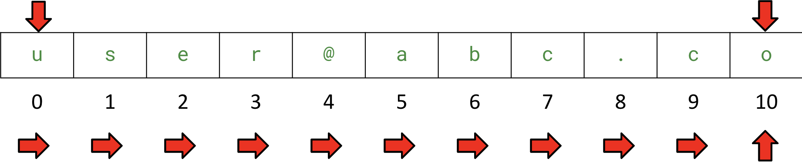
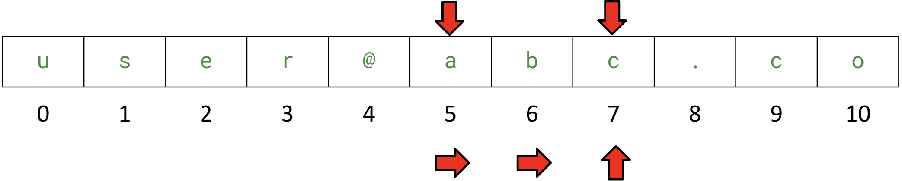
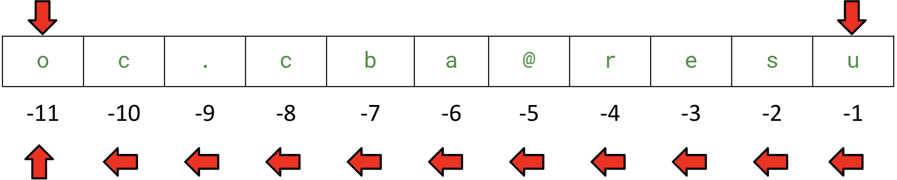
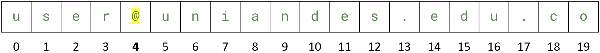
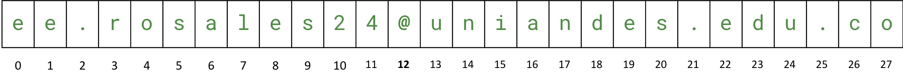
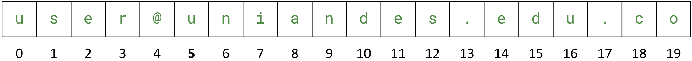
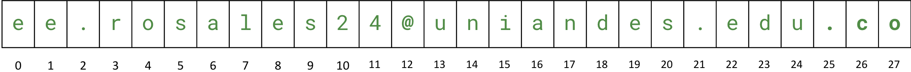

<!DOCTYPE html>
<html lang="en">
  <head>
    <meta charset="utf-8" />
    <meta name="viewport" content="width=device-width, initial-scale=1.0, maximum-scale=1.0, user-scalable=no" />

    <title></title>
    <link rel="stylesheet" href="dist/reveal.css" />
    <link rel="stylesheet" href="dist/theme/iph.css" id="theme" />
    <link rel="stylesheet" href="plugin/highlight/spyder.css" />
	<link rel="stylesheet" href="css/layout.css" />
	<link rel="stylesheet" href="plugin/customcontrols/style.css">


    <script defer src="dist/fontawesome/all.min.js"></script>

	<script type="text/javascript">
		var forgetPop = true;
		function onPopState(event) {
			if(forgetPop){
				forgetPop = false;
			} else {
				parent.postMessage(event.target.location.href, "app://obsidian.md");
			}
        }
		window.onpopstate = onPopState;
		window.onmessage = event => {
			if(event.data == "reload"){
				window.document.location.reload();
			}
			forgetPop = true;
		}

		function fitElements(){
			const itemsToFit = document.getElementsByClassName('fitText');
			for (const item in itemsToFit) {
				if (Object.hasOwnProperty.call(itemsToFit, item)) {
					var element = itemsToFit[item];
					fitElement(element,1, 1000);
					element.classList.remove('fitText');
				}
			}
		}

		function fitElement(element, start, end){

			let size = (end + start) / 2;
			element.style.fontSize = `${size}px`;

			if(Math.abs(start - end) < 1){
				while(element.scrollHeight > element.offsetHeight){
					size--;
					element.style.fontSize = `${size}px`;
				}
				return;
			}

			if(element.scrollHeight > element.offsetHeight){
				fitElement(element, start, size);
			} else {
				fitElement(element, size, end);
			}		
		}


		document.onreadystatechange = () => {
			fitElements();
			if (document.readyState === 'complete') {
				if (window.location.href.indexOf("?export") != -1){
					parent.postMessage(event.target.location.href, "app://obsidian.md");
				}
				if (window.location.href.indexOf("print-pdf") != -1){
					let stateCheck = setInterval(() => {
						clearInterval(stateCheck);
						window.print();
					}, 250);
				}
			}
	};


        </script>
  </head>
  <body>
    <div class="reveal">
      <div class="slides"><section  data-markdown><script type="text/template"><!-- .slide: class="has-light-background drop" data-background-color="#f8f8f8" -->
<div class="" style="position: absolute; left: 0px; top: 0px; height: 700px; width: 960px; min-height: 700px; display: flex; flex-direction: column; align-items: center; justify-content: center" absolute="true">

### <i class="fas fa-award"></i> IP Honores

 ####  *Más sobre strings*

[Eduardo Rosales](mailto:ee.rosales24@uniandes.edu.co)

Departamento de Ingeniería de Sistemas y Computación

Universidad de los Andes
</div></script></section><section  data-markdown><script type="text/template"><!-- .slide: class="has-light-background drop" data-background-color="#f8f8f8" -->
<div class="" style="position: absolute; left: 0px; top: 0px; height: 700px; width: 960px; min-height: 700px; display: flex; flex-direction: column; align-items: center; justify-content: center" absolute="true">

### `min()`

- Retorna el elemento menor 
    - De dos o más argumentos
- Sintaxis: 
```Python
min(arg1, arg2, *args, key)
```

- `arg1, arg2, *args`: Valores a comparar
- `key` (opcional): Función de un argumento 
    - Para personalizar la comparación
- Ayuda:  [min](https://docs.python.org/3/library/functions.html#min)
</div></script></section><section  data-markdown><script type="text/template"><!-- .slide: class="has-light-background drop" data-background-color="#f8f8f8" -->
<div class="" style="position: absolute; left: 0px; top: 0px; height: 700px; width: 960px; min-height: 700px; display: flex; flex-direction: column; align-items: center; justify-content: center" absolute="true">

### 🌀 `min()`  🌀

```Python
min(1, 2, 3)  # → 1

min(-3, -2, -1, 0, 1, 2, 3)  # → -3
```
</div></script></section><section  data-markdown><script type="text/template"><!-- .slide: class="has-light-background drop" data-background-color="#f8f8f8" -->
<div class="" style="position: absolute; left: 0px; top: 0px; height: 700px; width: 960px; min-height: 700px; display: flex; flex-direction: column; align-items: center; justify-content: center" absolute="true">

### `min()` - Ejemplos con strings

```Python
min('abcdefghijklmnopqrstuvwxyz')  #  → 'a'
   
min('abc', 'xyz')  # → 'abc'

min('z', 'xy', 'abc', key=len)  # → 'z' (Menor longitud)

min('', default='N/A')  # → 'N/A'
  
min('')  # → ValueError (Secuencia vacía y no hay default)
```
</div></script></section><section  data-markdown><script type="text/template"><!-- .slide: class="has-light-background drop" data-background-color="#f8f8f8" -->
<div class="" style="position: absolute; left: 0px; top: 0px; height: 700px; width: 960px; min-height: 700px; display: flex; flex-direction: column; align-items: center; justify-content: center" absolute="true">

### `max()` 

- Retorna el elemento mayor 
    - De dos o más argumentos
- Sintaxis: 
```Python
max(arg1, arg2, *args, key)
```
- `arg1, arg2, *args`: Valores a comparar
- `key` (opcional): Función de un argumento 
    - Para personalizar la comparación
- Ayuda:  [max](https://docs.python.org/3/library/functions.html#max)
</div></script></section><section  data-markdown><script type="text/template"><!-- .slide: class="has-light-background drop" data-background-color="#f8f8f8" -->
<div class="" style="position: absolute; left: 0px; top: 0px; height: 700px; width: 960px; min-height: 700px; display: flex; flex-direction: column; align-items: center; justify-content: center" absolute="true">

### 🌀 `max()` 🌀

```Python
max(1, 2, 3)  # → 3

max(-3, -2, -1, 0, 1, 2, 3)  # → 3
```
</div></script></section><section  data-markdown><script type="text/template"><!-- .slide: class="has-light-background drop" data-background-color="#f8f8f8" -->
<div class="" style="position: absolute; left: 0px; top: 0px; height: 700px; width: 960px; min-height: 700px; display: flex; flex-direction: column; align-items: center; justify-content: center" absolute="true">

### `max()` - Ejemplos con strings

```Python
max('abcdefghijklmnopqrstuvwxyz')  # → 'z'

max('abc', 'xyz')  # → 'xyz'

max('z', 'xy', 'abc', key=len)  # → 'abc' (Mayor longitud)

max('', default='N/A')  # → 'N/A'
  
max('')  # → ValueError (Secuencia vacía y no hay default)
```
</div></script></section><section  data-markdown><script type="text/template"><!-- .slide: class="has-light-background drop" data-background-color="#f8f8f8" -->
<div class="" style="position: absolute; left: 0px; top: 0px; height: 700px; width: 960px; min-height: 700px; display: flex; flex-direction: column; align-items: center; justify-content: center" absolute="true">

### `str.isspace()`

- Determina si la cadena
    - Está compuesta únicamente por caracteres de espacio
- Retorna `True` si todos los caracteres son espacios (en blanco)
    - Caso contrario, `False`
- Ayuda: [str.isspace](https://docs.python.org/3/library/stdtypes.html#str.isspace)
</div></script></section><section  data-markdown><script type="text/template"><!-- .slide: class="has-light-background drop" data-background-color="#f8f8f8" -->
<div class="" style="position: absolute; left: 0px; top: 0px; height: 700px; width: 960px; min-height: 700px; display: flex; flex-direction: column; align-items: center; justify-content: center" absolute="true">

### `str.isspace()` - Ejemplos

```python
' '.isspace()  # → True (Espacio simple)

'   '.isspace()  # → True (Varios espacios)

' a '.isspace()  # → False (Contiene una letra)

''.isspace()  # → False (Se debe evaluar al menos un carácter)

'\t'.isspace()  # → True (`\t` Considerado espacios)

'\n'.isspace()  # → True (`\n` Considerado espacios)

' \n\t'.isspace()  # → True (Solo caracteres de espacio)

'x\n\t'.isspace()  # → False (Contiene una letra)
```
</div></script></section><section  data-markdown><script type="text/template"><!-- .slide: class="has-light-background drop" data-background-color="#f8f8f8" -->
<div class="" style="position: absolute; left: 0px; top: 0px; height: 700px; width: 960px; min-height: 700px; display: flex; flex-direction: column; align-items: center; justify-content: center" absolute="true">

### ```str.isalpha()```

- Determina si la cadena 
	- Es completamente alfabética
- Retorna `True` si todos los caracteres son alfabéticos
	- Caso contrario False
- Ayuda:  [str.alpha](https://docs.python.org/3/library/stdtypes.html#str.isalpha)
</div></script></section><section  data-markdown><script type="text/template"><!-- .slide: class="has-light-background drop" data-background-color="#f8f8f8" -->
<div class="" style="position: absolute; left: 0px; top: 0px; height: 700px; width: 960px; min-height: 700px; display: flex; flex-direction: column; align-items: center; justify-content: center" absolute="true">

### ```str.isalpha()``` - Ejemplos

```Python
'abcd'.isalpha()  # → True

''.isalpha()  # → False (Se debe evaluar al menos un carácter)

'abc5'.isalpha()  # → False (5 es un dígito)

'a b'.isalpha()  # → False (Los espacios no son alfabéticos)

'abc#'.isalpha()  # → False (Los símbolos no son alfabéticos)

'a\n'.isalpha()  # → False (`\n` No es alfabético)

'a\t'.isalpha()  # → False (`\t` No es alfabético)

```
</div></script></section><section  data-markdown><script type="text/template"><!-- .slide: class="has-light-background drop" data-background-color="#f8f8f8" -->
<div class="" style="position: absolute; left: 0px; top: 0px; height: 700px; width: 960px; min-height: 700px; display: flex; flex-direction: column; align-items: center; justify-content: center" absolute="true">

### Quiz I

- ¿Cuál es el valor retornado por cada expresión?

```Python
'a'.isalpha()
    
''.isalpha()
    
'.2'.isalpha()
    
'@'.isalpha()
    
'IP'.isalpha()

'\\'.isalpha()
```
</div></script></section><section  data-markdown><script type="text/template"><!-- .slide: class="has-light-background drop" data-background-color="#f8f8f8" -->
<div class="" style="position: absolute; left: 0px; top: 0px; height: 700px; width: 960px; min-height: 700px; display: flex; flex-direction: column; align-items: center; justify-content: center" absolute="true">

### Quiz I - Solución

```Python
'a'.isalpha()  # → True
    
''.isalpha()  # → False
    
'.2'.isalpha()  # → False
    
'@'.isalpha()  # → False (`@` es un símbolo)
    
'IP'.isalpha()  # → True    

'\\'.isalpha()  # → False (`\\` es un carácter de escape)
```
</div></script></section><section  data-markdown><script type="text/template"><!-- .slide: class="has-light-background drop" data-background-color="#f8f8f8" -->
<div class="" style="position: absolute; left: 0px; top: 0px; height: 700px; width: 960px; min-height: 700px; display: flex; flex-direction: column; align-items: center; justify-content: center" absolute="true">

### ```str.isalnum()```
    
- Determina si la cadena
	- Es completamente alfanumérica
- Retorna `True` si los caracteres son alfanuméricos
	- Caso contrario `False`
- Ayuda: [str.isalnum](https://docs.python.org/3/library/stdtypes.html#str.isalnum)
</div></script></section><section  data-markdown><script type="text/template"><!-- .slide: class="has-light-background drop" data-background-color="#f8f8f8" -->
<div class="" style="position: absolute; left: 0px; top: 0px; height: 700px; width: 960px; min-height: 700px; display: flex; flex-direction: column; align-items: center; justify-content: center" absolute="true">

### ```str.isalum()``` - Ejemplos

```Python
'abcd123'.isalnum()  # → True

'abcd'.isalnum()  # → True

'123'.isalnum()  # → True

''.isalnum()  # → False (Se debe evaluar al menos un carácter)

'a c'.isalnum()  # → False (Los espacios no son alfanuméricos)

'a$b'.isalnum()  # → False (Los símbolos no son alfanuméricos)

'a\n'.isalnum()  # → False (`\n` no es alfanumérico)

'a\t'.isalnum()  # → False (`\t` no es alfanumérico)
```
</div></script></section><section  data-markdown><script type="text/template"><!-- .slide: class="has-light-background drop" data-background-color="#f8f8f8" -->
<div class="" style="position: absolute; left: 0px; top: 0px; height: 700px; width: 960px; min-height: 700px; display: flex; flex-direction: column; align-items: center; justify-content: center" absolute="true">

### Quiz II

- ¿Cuál es el valor retornado por cada expresión?

```Python
'a1'.isalnum()
    
''.isalnum()
    
'.2'.isalnum()
    
'@'.isalnum()
    
'IP'.isalnum()
    
'\\'.isalnum()
```
</div></script></section><section  data-markdown><script type="text/template"><!-- .slide: class="has-light-background drop" data-background-color="#f8f8f8" -->
<div class="" style="position: absolute; left: 0px; top: 0px; height: 700px; width: 960px; min-height: 700px; display: flex; flex-direction: column; align-items: center; justify-content: center" absolute="true">

### Quiz II - Solución

```Python
'a1'.isalnum()  # → True
    
''.isalnum()  # → False
    
'.2'.isalnum()  # → False (`.` es un símbolo)
    
'@'.isalnum()  # → False (`@` es un símbolo)
    
'IP'.isalnum()  # → True    

'\\'.isalnum()  # → False (`\\` es un carácter de escape)
```
</div></script></section><section  data-markdown><script type="text/template"><!-- .slide: class="has-light-background drop" data-background-color="#f8f8f8" -->
<div class="" style="position: absolute; left: 0px; top: 0px; height: 700px; width: 960px; min-height: 700px; display: flex; flex-direction: column; align-items: center; justify-content: center" absolute="true">

### ```str.islower()```
    
- Determina si una cadena 
	- Usa únicamente minúsculas
- Retorna `True` si los caracteres son minúsculas, 
	- Caso contrario `False`
- Usado para validar que un texto de entrada
	- Esté  todo en minúsculas
- Ayuda:  [str.islower](https://docs.python.org/3/library/stdtypes.html#str.islower)
</div></script></section><section  data-markdown><script type="text/template"><!-- .slide: class="has-light-background drop" data-background-color="#f8f8f8" -->
<div class="" style="position: absolute; left: 0px; top: 0px; height: 700px; width: 960px; min-height: 700px; display: flex; flex-direction: column; align-items: center; justify-content: center" absolute="true">

### ```str.islower()``` - Ejemplos

```Python
'abcd'.islower()  # → True

'1234'.islower()  # → False (Solo números no son minúsculas)

'1234a'.islower()  # → True (Números ignorados)

'ABCD'.islower()  # → False

''.islower()  # → False (Se debe evaluar al menos un carácter)

'abcd#'.islower()  # → True (Símbolos no se consideran)

'a\n\tb'.islower()  # → True (`\n` and `\t` no se consideran)
```
</div></script></section><section  data-markdown><script type="text/template"><!-- .slide: class="has-light-background drop" data-background-color="#f8f8f8" -->
<div class="" style="position: absolute; left: 0px; top: 0px; height: 700px; width: 960px; min-height: 700px; display: flex; flex-direction: column; align-items: center; justify-content: center" absolute="true">

### Quiz III

- ¿Cuál es el valor retornado por cada expresión?

```Python

'a'.islower()
    
''.islower()
    
'2'.islower()
    
'@'.islower()
    
'IP'.islower()
```
</div></script></section><section  data-markdown><script type="text/template"><!-- .slide: class="has-light-background drop" data-background-color="#f8f8f8" -->
<div class="" style="position: absolute; left: 0px; top: 0px; height: 700px; width: 960px; min-height: 700px; display: flex; flex-direction: column; align-items: center; justify-content: center" absolute="true">

### Quiz III - Solución

```Python
'a'.islower()  # → True
    
''.islower()  # → False
    
'2'.islower()  # → False
    
'@'.islower()  # → False
    
'IP'.islower()  # → False    
```
</div></script></section><section  data-markdown><script type="text/template"><!-- .slide: class="has-light-background drop" data-background-color="#f8f8f8" -->
<div class="" style="position: absolute; left: 0px; top: 0px; height: 700px; width: 960px; min-height: 700px; display: flex; flex-direction: column; align-items: center; justify-content: center" absolute="true">

### Quiz IV

- ¿Cuál es el valor retornado por cada expresión?

```Python
s = 'a'; s.isalpha() and s.islower()
   
s = 'ABC'; s.isalpha() and s.islower()
   
s = 'ABC'; s.isalpha() or s.islower()
   
s = '1a'; s.isalpha() and s.islower()
   
s = '1a'; s.isalpha() or s.islower()
   
s = '@a'; s.isalpha() and s.islower()
   
s = '@a'; s.isalpha() or s.islower()
```
</div></script></section><section  data-markdown><script type="text/template"><!-- .slide: class="has-light-background drop" data-background-color="#f8f8f8" -->
<div class="" style="position: absolute; left: 0px; top: 0px; height: 700px; width: 960px; min-height: 700px; display: flex; flex-direction: column; align-items: center; justify-content: center" absolute="true">

### Quiz IV - Solución

```Python
s = 'a'; s.isalpha() and s.islower()  # → True
   
s = 'ABC'; s.isalpha() and s.islower()  # → False
   
s = 'ABC'; s.isalpha() or s.islower()  # → True
   
s = '1a'; s.isalpha() and s.islower()  # → False
   
s = '1a'; s.isalpha() or s.islower()  # → True
   
s = '@a'; s.isalpha() and s.islower()  # → False
   
s = '@a'; s.isalpha() or s.islower()  # → True
```
</div></script></section><section  data-markdown><script type="text/template"><!-- .slide: class="has-light-background drop" data-background-color="#f8f8f8" -->
<div class="" style="position: absolute; left: 0px; top: 0px; height: 700px; width: 960px; min-height: 700px; display: flex; flex-direction: column; align-items: center; justify-content: center" absolute="true">

### Quiz V

- ¿Cuál es el valor retornado por cada expresión?

```Python
s = 'a'; s.isalnum() and s.isalpha() and s.islower()
   
s = 'abc'; s.isalnum() or s.isalpha() or s.islower()
   
s = 'Abc1'; (s.isalnum() and s.isalpha()) or s.islower()
   
s = '1a'; (s.isalnum() or s.isalpha()) and s.islower()
   
s = ''; s.isalnum() or s.isalpha() or s.islower()
   
s = '@'; (s.isalnum() and s.isalpha()) or s.islower()
   
s = '@a'; (s.isalnum() or s.isalpha()) or s.islower()
```
</div></script></section><section  data-markdown><script type="text/template"><!-- .slide: class="has-light-background drop" data-background-color="#f8f8f8" -->
<div class="" style="position: absolute; left: 0px; top: 0px; height: 700px; width: 960px; min-height: 700px; display: flex; flex-direction: column; align-items: center; justify-content: center" absolute="true">

### Quiz V - Solución

```Python
s = 'a'; s.isalnum() and s.isalpha() and s.islower()  # → True
   
s = 'abc'; s.isalnum() or s.isalpha() or s.islower()  # → True
   
s = 'Abc1'; (s.isalnum() and s.isalpha()) or s.islower()  # → False
   
s = '1a'; (s.isalnum() or s.isalpha()) and s.islower()  # → True
   
s = ''; s.isalnum() or s.isalpha() or s.islower()  # → False
   
s = '@'; (s.isalnum() and s.isalpha()) or s.islower()  # → False
   
s = '@a'; (s.isalnum() or s.isalpha()) or s.islower()  # → True
```
</div></script></section><section  data-markdown><script type="text/template"><!-- .slide: class="has-light-background drop" data-background-color="#f8f8f8" -->
<div class="" style="position: absolute; left: 0px; top: 0px; height: 700px; width: 960px; min-height: 700px; display: flex; flex-direction: column; align-items: center; justify-content: center" absolute="true">

### Subcadenas (string slicing)
    
- Retorna una subcadena de la cadena original
    
- Sintaxis: 
```Python
string[start: end :step]  # Slide notation [:]
```

- `start`: Inicio de subcadena (opcional: 0, inclusivo)
- `end`: Fin de subcadena (opcional: Fin de la cadena, excluyente)
- `step`: incremento (opcional: 1)
- Ayuda: [Slicings](https://docs.python.org/3/reference/expressions.html#slicings)
</div></script></section><section  data-markdown><script type="text/template"><!-- .slide: class="has-light-background drop" data-background-color="#f8f8f8" -->
<div class="" style="position: absolute; left: 0px; top: 0px; height: 700px; width: 960px; min-height: 700px; display: flex; flex-direction: column; align-items: center; justify-content: center" absolute="true">

### Subcadenas (string slicing) - Ejemplo

```Python
'user@abc.co'[:]  # → 'user@abc.co'
# start = 0
# stop = 11  # (Fin de la cadena)
# step = 1  # (Se mueve de uno en uno, hacia adelante)
```


</div></script></section><section  data-markdown><script type="text/template"><!-- .slide: class="has-light-background drop" data-background-color="#f8f8f8" -->
<div class="" style="position: absolute; left: 0px; top: 0px; height: 700px; width: 960px; min-height: 700px; display: flex; flex-direction: column; align-items: center; justify-content: center" absolute="true">

### Quiz VI

- Usando string slicing, ¿cómo extraer el usuario (`'user'`) en esta cadena que representa un email?

```Python
'user@abc.co'
```
</div></script></section><section  data-markdown><script type="text/template"><!-- .slide: class="has-light-background drop" data-background-color="#f8f8f8" -->
<div class="" style="position: absolute; left: 0px; top: 0px; height: 700px; width: 960px; min-height: 700px; display: flex; flex-direction: column; align-items: center; justify-content: center" absolute="true">

### Quiz VI - Solución

```Python
'user@abc.co'[:4]  # → 'user'
# start = 0
# stop = 4  # (Excluyente)
# step = 1  # (Se mueve de uno en uno, hacia adelante)
```


</div></script></section><section  data-markdown><script type="text/template"><!-- .slide: class="has-light-background drop" data-background-color="#f8f8f8" -->
<div class="" style="position: absolute; left: 0px; top: 0px; height: 700px; width: 960px; min-height: 700px; display: flex; flex-direction: column; align-items: center; justify-content: center" absolute="true">

### Quiz VII

- Usando string slicing, ¿cómo extraer el dominio (`'abc'`) en esta cadena que representa un email?

```Python
'user@abc.co'
```
</div></script></section><section  data-markdown><script type="text/template"><!-- .slide: class="has-light-background drop" data-background-color="#f8f8f8" -->
<div class="" style="position: absolute; left: 0px; top: 0px; height: 700px; width: 960px; min-height: 700px; display: flex; flex-direction: column; align-items: center; justify-content: center" absolute="true">

### Quiz VII - Solución

```Python
'user@abc.co'[5:8]  # → 'abc'
# start = 5
# stop = 8  # (Excluyente)
# step = 1  # (Se mueve de uno en uno, hacia adelante)
```


</div></script></section><section  data-markdown><script type="text/template"><!-- .slide: class="has-light-background drop" data-background-color="#f8f8f8" -->
<div class="" style="position: absolute; left: 0px; top: 0px; height: 700px; width: 960px; min-height: 700px; display: flex; flex-direction: column; align-items: center; justify-content: center" absolute="true">

### Subcadenas (string slicing) - `step` Negativo

```Python
'oc.cba@resu'[::-1]  # → 'user@abc.co'
# start = -11  # Inicio de la cadena
# stop = 0  # Fin de la cadena
# step = -1  # Se mueve de uno en uno, hacia *atrás*
```



</div></script></section><section  data-markdown><script type="text/template"><!-- .slide: class="has-light-background drop" data-background-color="#f8f8f8" -->
<div class="" style="position: absolute; left: 0px; top: 0px; height: 700px; width: 960px; min-height: 700px; display: flex; flex-direction: column; align-items: center; justify-content: center" absolute="true">

### Quiz VIII

- Usando string slicing, ¿cómo hacer una copia de la cadena `'user@uniandes.edu.co'` y asignarla a la variable `copia`?
</div></script></section><section  data-markdown><script type="text/template"><!-- .slide: class="has-light-background drop" data-background-color="#f8f8f8" -->
<div class="" style="position: absolute; left: 0px; top: 0px; height: 700px; width: 960px; min-height: 700px; display: flex; flex-direction: column; align-items: center; justify-content: center" absolute="true">

### Quiz VIII - Solución

```Python
copia = 'user@uniandes.edu.co'[:]
# print(copia) → user@uniandes.edu.co
```
</div></script></section><section  data-markdown><script type="text/template"><!-- .slide: class="has-light-background drop" data-background-color="#f8f8f8" -->
<div class="" style="position: absolute; left: 0px; top: 0px; height: 700px; width: 960px; min-height: 700px; display: flex; flex-direction: column; align-items: center; justify-content: center" absolute="true">

### Quiz IX

- Usando string slicing, ¿cómo extraer el usuario (`'user'`) de `'user@uniandes.edu.co'` y asignarla a la variable `usuario`?


</div></script></section><section  data-markdown><script type="text/template"><!-- .slide: class="has-light-background drop" data-background-color="#f8f8f8" -->
<div class="" style="position: absolute; left: 0px; top: 0px; height: 700px; width: 960px; min-height: 700px; display: flex; flex-direction: column; align-items: center; justify-content: center" absolute="true">

### Quiz IX - Solución

```Python
# `end` es excluyente, esto es: 0 a 4, excluyendo 4 ('@')  
usuario = 'user@uniandes.edu.co'[:4]
# print(usuario) → user
```


</div></script></section><section  data-markdown><script type="text/template"><!-- .slide: class="has-light-background drop" data-background-color="#f8f8f8" -->
<div class="" style="position: absolute; left: 0px; top: 0px; height: 700px; width: 960px; min-height: 700px; display: flex; flex-direction: column; align-items: center; justify-content: center" absolute="true">

### Quiz X

- ¿Cómo obtener el usuario  en un correo en la forma `'usuario@uniandes.edu.co'` y asignarla a la variable `usuario`?
- Puede asumir que solo hay una arroba en el correo y 
	- Que el usuario se ubica antes de esta

Ej: ee.rosales24@uniandes.edu.co
</div></script></section><section  data-markdown><script type="text/template"><!-- .slide: class="has-light-background drop" data-background-color="#f8f8f8" -->
<div class="" style="position: absolute; left: 0px; top: 0px; height: 700px; width: 960px; min-height: 700px; display: flex; flex-direction: column; align-items: center; justify-content: center" absolute="true">

### Quiz X

```python
correo = 'ee.rosales24@uniandes.edu.co'
indice = correo.find('@')
usuario = correo[:indice]
```


</div></script></section><section  data-markdown><script type="text/template"><!-- .slide: class="has-light-background drop" data-background-color="#f8f8f8" -->
<div class="" style="position: absolute; left: 0px; top: 0px; height: 700px; width: 960px; min-height: 700px; display: flex; flex-direction: column; align-items: center; justify-content: center" absolute="true">

### Quiz XI

- Usando indexación de strings, ¿cómo extraer la arroba (`'@'`) en la posición fija en que está en `'user@uniandes.edu.co'` y asignarla a la variable `arroba`?


</div></script></section><section  data-markdown><script type="text/template"><!-- .slide: class="has-light-background drop" data-background-color="#f8f8f8" -->
<div class="" style="position: absolute; left: 0px; top: 0px; height: 700px; width: 960px; min-height: 700px; display: flex; flex-direction: column; align-items: center; justify-content: center" absolute="true">

### Quiz XI - Solución

```Python
# Use indexación para extraer un solo carácter
arroba = 'user@uniandes.edu.co'[4]
# print(arroba) → @
```


</div></script></section><section  data-markdown><script type="text/template"><!-- .slide: class="has-light-background drop" data-background-color="#f8f8f8" -->
<div class="" style="position: absolute; left: 0px; top: 0px; height: 700px; width: 960px; min-height: 700px; display: flex; flex-direction: column; align-items: center; justify-content: center" absolute="true">

### Quiz XII

- ¿Cómo obtener el índice en donde está arroba (`'@'`) en un correo en la forma `'usuario@uniandes.edu.co'` y asignarla a la variable `indice`?
- Puede asumir que solo hay una arroba en el correo

Ej: ee.rosales24@uniandes.edu.co
</div></script></section><section  data-markdown><script type="text/template"><!-- .slide: class="has-light-background drop" data-background-color="#f8f8f8" -->
<div class="" style="position: absolute; left: 0px; top: 0px; height: 700px; width: 960px; min-height: 700px; display: flex; flex-direction: column; align-items: center; justify-content: center" absolute="true">

### Quiz XII - Solución

```Python
# Use find() para encontrar el índice de un carácter especifíco
correo = 'ee.rosales24@uniandes.edu.co'
indice = correo.find('@')
# print(indice) → 12
```



</div></script></section><section  data-markdown><script type="text/template"><!-- .slide: class="has-light-background drop" data-background-color="#f8f8f8" -->
<div class="" style="position: absolute; left: 0px; top: 0px; height: 700px; width: 960px; min-height: 700px; display: flex; flex-direction: column; align-items: center; justify-content: center" absolute="true">

### Quiz XIII

- Usando string slicing, ¿cómo extraer el dominio (`'uniandes.edu.co'`) de: `'user@uniandes.edu.co'` y asignarla a la variable `dominio`?


</div></script></section><section  data-markdown><script type="text/template"><!-- .slide: class="has-light-background drop" data-background-color="#f8f8f8" -->
<div class="" style="position: absolute; left: 0px; top: 0px; height: 700px; width: 960px; min-height: 700px; display: flex; flex-direction: column; align-items: center; justify-content: center" absolute="true">

### Quiz XIII - Solución

```Python
# `start` es incluyente, esto es: 5, incluyendo 5 ('u')  
dominio = 'user@uniandes.edu.co'[5:]
# print(dominio) → uniandes.edu.co
```


</div></script></section><section  data-markdown><script type="text/template"><!-- .slide: class="has-light-background drop" data-background-color="#f8f8f8" -->
<div class="" style="position: absolute; left: 0px; top: 0px; height: 700px; width: 960px; min-height: 700px; display: flex; flex-direction: column; align-items: center; justify-content: center" absolute="true">

### Quiz XIV

- ¿Cómo obtener el índice en donde inicia `'uniandes.edu.co'` en un correo en la forma: `'user@uniandes.edu.co'` y asignarla a la variable `dominio`?
- Puede asumir que solo hay una arroba en el correo y 
	- Que `uniandes.edu.co` se ubica después de esta

Ej: ee.rosales24@uniandes.edu.co
</div></script></section><section  data-markdown><script type="text/template"><!-- .slide: class="has-light-background drop" data-background-color="#f8f8f8" -->
<div class="" style="position: absolute; left: 0px; top: 0px; height: 700px; width: 960px; min-height: 700px; display: flex; flex-direction: column; align-items: center; justify-content: center" absolute="true">

### Quiz XIV - Solución

```Python
correo = 'ee.rosales24@uniandes.edu.co'
indice = correo.find('@')
dominio = correo[indice + 1:]
```


</div></script></section><section  data-markdown><script type="text/template"><!-- .slide: class="has-light-background drop" data-background-color="#f8f8f8" -->
<div class="" style="position: absolute; left: 0px; top: 0px; height: 700px; width: 960px; min-height: 700px; display: flex; flex-direction: column; align-items: center; justify-content: center" absolute="true">

### Quiz XV

- Usando string slicing, ¿cómo extraer el subdominio (`'co'`) de: `'user@uniandes.edu.co'` y asignarla a la variable `co`?


</div></script></section><section  data-markdown><script type="text/template"><!-- .slide: class="has-light-background drop" data-background-color="#f8f8f8" -->
<div class="" style="position: absolute; left: 0px; top: 0px; height: 700px; width: 960px; min-height: 700px; display: flex; flex-direction: column; align-items: center; justify-content: center" absolute="true">

### Quiz XV - Solución

```Python
# `start` es inclusivo, esto es: -2 es 'c'  
co = 'user@uniandes.edu.co'[-2:]
# print(co) → co

# Alternativamente:
# co = 'user@uniandes.edu.co'[18:]
```


</div></script></section><section  data-markdown><script type="text/template"><!-- .slide: class="has-light-background drop" data-background-color="#f8f8f8" -->
<div class="" style="position: absolute; left: 0px; top: 0px; height: 700px; width: 960px; min-height: 700px; display: flex; flex-direction: column; align-items: center; justify-content: center" absolute="true">

### Quiz XVI

-  ¿Cómo saber si un correo termina en `co` y asignar la respuesta a la variable `respuesta`?

Ej: ee.rosales24@uniandes.edu.co
</div></script></section><section  data-markdown><script type="text/template"><!-- .slide: class="has-light-background drop" data-background-color="#f8f8f8" -->
<div class="" style="position: absolute; left: 0px; top: 0px; height: 700px; width: 960px; min-height: 700px; display: flex; flex-direction: column; align-items: center; justify-content: center" absolute="true">

### Quiz XVI - Solución

```Python

respuesta = 'ee.rosales24@uniandes.edu.co'.endswith(".co")
# print(respuesta) → True

```



</div></script></section><section  data-markdown><script type="text/template"><!-- .slide: class="has-light-background drop" data-background-color="#f8f8f8" -->
<div class="" style="position: absolute; left: 0px; top: 0px; height: 700px; width: 960px; min-height: 700px; display: flex; flex-direction: column; align-items: center; justify-content: center" absolute="true">

### Quiz XVII

- ¿Cuál es el valor retornado por cada expresión?

```Python
'todo'[:] 

'elbiel'[::-1]
 
'reconocer'[::-1]

'o$c%u&l/t!o'[::2]
```
</div></script></section><section  data-markdown><script type="text/template"><!-- .slide: class="has-light-background drop" data-background-color="#f8f8f8" -->
<div class="" style="position: absolute; left: 0px; top: 0px; height: 700px; width: 960px; min-height: 700px; display: flex; flex-direction: column; align-items: center; justify-content: center" absolute="true">

### Quiz XVII - Solución

```Python
'todo'[:]  # → 'todo' 

'elbiel'[::-1]  # → leible
 
'reconocer'[::-1]  # → reconocer

'o$c%u&l/t!o'[::2]  # → oculto
```
</div></script></section><section  data-markdown><script type="text/template"><!-- .slide: class="has-light-background drop" data-background-color="#f8f8f8" -->
<div class="" style="position: absolute; left: 0px; top: 0px; height: 700px; width: 960px; min-height: 700px; display: flex; flex-direction: column; align-items: center; justify-content: center" absolute="true">

### Quiz XVIII

- ¿Cuál es el resultado de ejecutar el siguiente código?

```Python
frase = '¡Hay, me duele!, me duele justo ay'

frase_corregida = '¡Ay' + frase[4:-2] + 'allí'

print(frase)

print(frase_corregida)
```
</div></script></section><section  data-markdown><script type="text/template"><!-- .slide: class="has-light-background drop" data-background-color="#f8f8f8" -->
<div class="" style="position: absolute; left: 0px; top: 0px; height: 700px; width: 960px; min-height: 700px; display: flex; flex-direction: column; align-items: center; justify-content: center" absolute="true">

### Quiz XVIII - Solución

```Python
frase = '¡Hay, me duele!, me duele justo ay'

frase_corregida = '¡Ay' + frase[4:-2] + 'allí'

print(frase)

print(frase_corregida)
```

```plaintext
¡Hay, me duele!, me duele justo ay

¡Ay, me duele!, me duele justo allí
```
</div></script></section><section  data-markdown><script type="text/template"><!-- .slide: class="has-light-background drop" data-background-color="#f8f8f8" -->
<div class="" style="position: absolute; left: 0px; top: 0px; height: 700px; width: 960px; min-height: 700px; display: flex; flex-direction: column; align-items: center; justify-content: center" absolute="true">

### Nuevas prácticas

- Revise las siguientes buenas prácticas:
	- <a href="https://eerosales24.github.io/iph_2025_20/general/buenas_practicas/#/44" target="_blank" rel="noopener noreferrer">BP-22: Uso seguro de min() y max()</a>
	- <a href="https://eerosales24.github.io/iph_2025_20/general/buenas_practicas/#/45" target="_blank" rel="noopener noreferrer">BP-23: Validaciones seguras de métodos de str</a>
</div></script></section><section  data-markdown><script type="text/template"><!-- .slide: class="has-light-background drop" data-background-color="#f8f8f8" -->
<div class="" style="position: absolute; left: 0px; top: 0px; height: 700px; width: 960px; min-height: 700px; display: flex; flex-direction: column; align-items: center; justify-content: center" absolute="true">

#  Actividad  en Clase

- El laboratorio de mañana, asume que usted terminó esta actividad
	- Por lo tanto, por favor:
		- Trabaje en forma **individual** y en **silencio**

	<br> 

- Envíe su entregable
	- Tal y como se indica al final de la actividad
		- Tiene intentos ilimitados de envío
</div></script></section><section  data-markdown><script type="text/template"><!-- .slide: class="has-light-background drop" data-background-color="#f8f8f8" -->
<div class="" style="position: absolute; left: 0px; top: 0px; height: 700px; width: 960px; min-height: 700px; display: flex; flex-direction: column; align-items: center; justify-content: center" absolute="true">

#  Actividad  en Clase

- **Objetivos:**
	- Afianzar la comprensión de los métodos de los strings
	- Afianzar la compresión del uso de indexamiento y slicing en strings
	- Afianzar la comprensión de f-strings
	- Comprender parámetros opcionales
</div></script></section><section  data-markdown><script type="text/template"><!-- .slide: class="has-light-background drop" data-background-color="#f8f8f8" -->
<div class="" style="position: absolute; left: 0px; top: 0px; height: 700px; width: 960px; min-height: 700px; display: flex; flex-direction: column; align-items: center; justify-content: center" absolute="true">

###  Actividad en Clase (1/4)

- Cree un archivo llamado: `logica.py`
	- Copie y pegue el siguiente código e implemente el `TODO1`:

```python
import doctest

def es_palindrome_basico(cadena: str) -> bool:
    """
    Verifica si un string (sin espacios) es un palíndromo, esto es, 
    si se lee igual en ambos sentidos.

    Args:
        cadena (str): La palabra o frase de entrada a verificar (sin espacios).

    Returns:
        bool: True si el string es un palíndromo, False en caso contrario.

    >>> es_palindrome_basico('Wow')  # Caso no es palíndromo (mayúscula inicial)
    False
    >>> es_palindrome_basico('wow')  # Caso es palíndromo
    True
    >>> es_palindrome_basico('12321')  # Caso es palíndromo (número)
    True
    >>> es_palindrome_basico('1234')  # Caso no es palíndromo (número)
    False
    """
    # TODO1: Implemente la función tal y como se describe en la documentación

#doctest.run_docstring_examples(es_palindrome_basico, globals(), verbose=True)
```
</div></script></section><section  data-markdown><script type="text/template"><!-- .slide: class="has-light-background drop" data-background-color="#f8f8f8" -->
<div class="" style="position: absolute; left: 0px; top: 0px; height: 700px; width: 960px; min-height: 700px; display: flex; flex-direction: column; align-items: center; justify-content: center" absolute="true">

###  Actividad en Clase (2/4)

- En `logica.py`
	- Copie y pegue el siguiente código e implemente el `TODO2`:

```python
def es_palindrome_ignora_mayusculas(cadena: str) -> bool:
    """
    Verifica si un string (sin espacios) es un palíndromo, esto es, 
    si se lee igual en ambos sentidos, ignorando diferencias entre mayúsculas y
    minúsculas.

    Args:
        cadena (str): La palabra o frase de entrada a verificar.

    Returns:
        bool: True si el string es un palíndromo, False en caso contrario.

    >>> es_palindrome_ignora_mayusculas('Wow')  # Caso es palíndromo (ignora mayúscula inicial)
    True
    >>> es_palindrome_ignora_mayusculas('wow')  # Caso es palíndromo
    True
    >>> es_palindrome_ignora_mayusculas('12321')  # Caso es palíndromo (número)
    True
    >>> es_palindrome_ignora_mayusculas('1234')  # Caso no es palíndromo (número)
    False
    """
    # TODO2: Implemente la función tal y como se describe en la documentación

#doctest.run_docstring_examples(es_palindrome_ignora_mayusculas, globals(), verbose=True)
```
</div></script></section><section  data-markdown><script type="text/template"><!-- .slide: class="has-light-background drop" data-background-color="#f8f8f8" -->
<div class="" style="position: absolute; left: 0px; top: 0px; height: 700px; width: 960px; min-height: 700px; display: flex; flex-direction: column; align-items: center; justify-content: center" absolute="true">

### Parámetro opcional en Python

-  Aquel que tiene un **valor por defecto** asignado en la definición de una función
    
- Su sintaxis es:
```python
def funcion(parámetro=valor_por_defecto):
```
    
- Si **no se proporciona** ese argumento al llamar la función
	- Se usará el **valor por defecto**
    
- Si **se proporciona**
	- El valor dado **sobrescribe** el valor por defecto
</div></script></section><section  data-markdown><script type="text/template"><!-- .slide: class="has-light-background drop" data-background-color="#f8f8f8" -->
<div class="" style="position: absolute; left: 0px; top: 0px; height: 700px; width: 960px; min-height: 700px; display: flex; flex-direction: column; align-items: center; justify-content: center" absolute="true">

### Parámetro opcional en Python - Ejemplo

```python
def es_palindrome_3(cadena: str, sensible_mayusculas: bool=False) -> bool:
```

- `sensible_mayusculas` 
	- Es un **parámetro opcional**
    
- Por defecto, su valor es `False`
	- Es decir, **no distingue entre mayúsculas y minúsculas**
    
- Si se quiere que sí distinga, se debe invocar así a la función:  

```python
es_palindrome_3("Oso", True)
```
</div></script></section><section  data-markdown><script type="text/template"><!-- .slide: class="has-light-background drop" data-background-color="#f8f8f8" -->
<div class="" style="position: absolute; left: 0px; top: 0px; height: 700px; width: 960px; min-height: 700px; display: flex; flex-direction: column; align-items: center; justify-content: center" absolute="true">

###  Actividad en Clase (3/4)

- En `logica.py`
	- Copie y pegue el siguiente código e implemente el `TODO3`:

```python
def es_palindromo_configurable(cadena: str, sensible_mayusculas: bool=False) -> bool:
    """
    Verifica si un string es un palíndromo (sin espacios), esto es, si se lee
    igual en ambos sentidos. Se puede especificar si la verificación es sensible
    a mayúsculas y minúsculas.

    Args:
        cadena (str): La palabra o frase de entrada a verificar.
        sensible_mayusculas (bool, opcional): Indica si la verificación debe ser
        sensible a las mayúsculas y minúsculas. Por defecto: False.

    Returns:
        bool: True si el string es un palíndromo, False en caso contrario.

    >>> es_palindromo_configurable('Wow', True)  # Caso no es palíndromo (no ignora mayúscula inicial)
    False
    >>> es_palindromo_configurable('Wow')  # Caso es palíndromo (ignora mayúscula inicial)
    True
    >>> es_palindromo_configurable('radar')  # Caso es palíndromo
    True
    >>> es_palindromo_configurable('Radar', True)  # Caso no es palíndromo (no ignora mayúscula inicial)
    False
    >>> es_palindromo_configurable('12321')  # Caso es palíndromo (número)
    True
    >>> es_palindromo_configurable('1234')  # Caso no es palíndromo (número)
    False
    """
    # TODO3: Implemente la función tal y como se describe en la documentación

#doctest.run_docstring_examples(es_palindromo_configurable, globals(), verbose=True)
```
</div></script></section><section  data-markdown><script type="text/template"><!-- .slide: class="has-light-background drop" data-background-color="#f8f8f8" -->
<div class="" style="position: absolute; left: 0px; top: 0px; height: 700px; width: 960px; min-height: 700px; display: flex; flex-direction: column; align-items: center; justify-content: center" absolute="true">

###  Actividad en Clase (4/4)

1. Comprima en un archivo `.zip` el archivo:
	- `logica.py`

	<br>

2. Haga el envío del `.zip` en  [Bloque Neón](https://bloqueneon.uniandes.edu.co/)
	- Vaya a **"Actividades"**
		- **"N3-L1"**
</div></script></section><section  data-markdown><script type="text/template"><!-- .slide: class="has-light-background drop" data-background-color="#f8f8f8" -->
<div class="" style="position: absolute; left: 0px; top: 0px; height: 700px; width: 960px; min-height: 700px; display: flex; flex-direction: column; align-items: center; justify-content: center" absolute="true">

<i class="fas fa-question-circle fa-2x fa-spin fa-4x"></i>

<br>
<br>

 [<i class="fas fa-home  fa-3x"></i>](https://eerosales24.github.io/iph_2025_20/#)
</div></script></section></div>
    </div>

    <script src="dist/reveal.js"></script>

    <script src="plugin/markdown/markdown.js"></script>
    <script src="plugin/highlight/highlight.js"></script>
    <script src="plugin/zoom/zoom.js"></script>
    <script src="plugin/notes/notes.js"></script>
    <script src="plugin/math/math.js"></script>
	<script src="plugin/mermaid/mermaid.js"></script>
	<script src="plugin/chart/chart.min.js"></script>
	<script src="plugin/chart/plugin.js"></script>
	<script src="plugin/customcontrols/plugin.js"></script>

    <script>
      function extend() {
        var target = {};
        for (var i = 0; i < arguments.length; i++) {
          var source = arguments[i];
          for (var key in source) {
            if (source.hasOwnProperty(key)) {
              target[key] = source[key];
            }
          }
        }
        return target;
      }

	  function isLight(color) {
		let hex = color.replace('#', '');

		// convert #fff => #ffffff
		if(hex.length == 3){
			hex = `${hex[0]}${hex[0]}${hex[1]}${hex[1]}${hex[2]}${hex[2]}`;
		}

		const c_r = parseInt(hex.substr(0, 2), 16);
		const c_g = parseInt(hex.substr(2, 2), 16);
		const c_b = parseInt(hex.substr(4, 2), 16);
		const brightness = ((c_r * 299) + (c_g * 587) + (c_b * 114)) / 1000;
		return brightness > 155;
	}

	var bgColor = getComputedStyle(document.documentElement).getPropertyValue('--r-background-color').trim();
	var isLight = isLight(bgColor);

	if(isLight){
		document.body.classList.add('has-light-background');
	} else {
		document.body.classList.add('has-dark-background');
	}

      // default options to init reveal.js
      var defaultOptions = {
        controls: true,
        progress: true,
        history: true,
        center: true,
        transition: 'default', // none/fade/slide/convex/concave/zoom
        plugins: [
          RevealMarkdown,
          RevealHighlight,
          RevealZoom,
          RevealNotes,
          RevealMath.MathJax3,
		  RevealMermaid,
		  RevealChart,
		  RevealCustomControls,
        ],


    	allottedTime: 120 * 1000,

		mathjax3: {
			mathjax: 'plugin/math/mathjax/tex-mml-chtml.js',
		},
		markdown: {
		  gfm: true,
		  mangle: true,
		  pedantic: false,
		  smartLists: false,
		  smartypants: false,
		},

		mermaid: {
			theme: isLight ? 'default' : 'dark',
		},

		customcontrols: {
			controls: [
			]
		},
      };

      // options from URL query string
      var queryOptions = Reveal().getQueryHash() || {};

      var options = extend(defaultOptions, {"width":960,"height":700,"margin":"0.025","minScale":"0.1","maxScale":"2.0","controls":"true","controlsLayout":"bottom-right","progress":"true","slideNumber":"true","center":"false","transition":"slide","transitionSpeed":"default"}, queryOptions);
    </script>

    <script>
      Reveal.initialize(options);
    </script>
  </body>

  <!-- created with Advanced Slides -->
</html>
